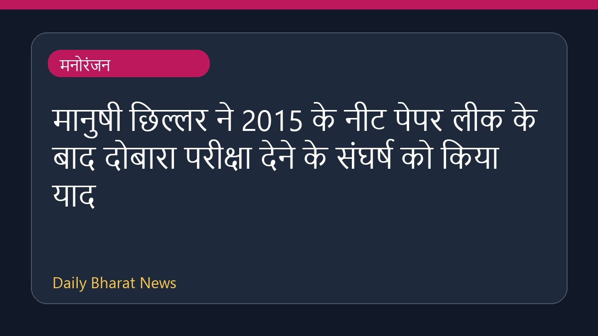

मानुषी छिल्लर ने 2015 के नीट पेपर लीक के बाद दोबारा परीक्षा देने के संघर्ष को किया याद

अभिनेत्री मानुषी छिल्लर ने 2015 में नीट परीक्षा का पेपर लीक होने के बाद दोबारा परीक्षा देने के अपने मुश्किल दौर को साझा किया है। उन्होंने बताया कि यह उनके लिए बेहद कठिन समय था, जब उन्हें सब कुछ त्यागना पड़ा था और यह सवाल उठता था कि आपके पास प्रयास करने के लिए और कितना संघर्ष बाकी है। इस बीच, नोरहा फतेही ने भी छात्रों का समर्थन करते हुए कहा है कि किसी भी छात्र की जान नहीं जानी चाहिए। इस घटना से छात्रों को हुई परेशानियों का पता चलता है।
मूल स्रोत: Entertainment Sources
It was incredibly tough: Manushi Chhillar on retaking NEET 2015 after paper leak - India Today ↗
It was incredibly tough: Manushi Chhillar on retaking NEET 2015 after paper leak - India Today ↗